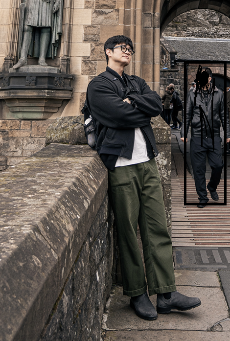

단국대학교 컴퓨터공학
수어 번역(SLT) 및 모션 생성 등 딥러닝 기술을 활용한 컴퓨터 인터랙션 시스템을 연구하고 있습니다.

연속적인 수어 모션 생성을 위한 확산 모델 기반 방법론 연구 및 개발.
Dual Wrist-mounted 형태의 접촉 인지 Hand-Object Interaction 데이터셋 구축 및 분석.
여기에 진행했던 프로젝트의 간략한 설명, 사용한 기술 스택(PyTorch, Blender 등), 주요 성과를 적어주세요.